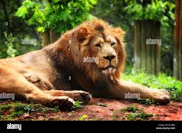
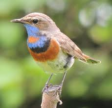
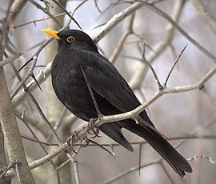
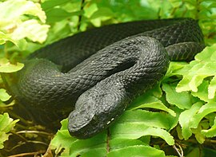
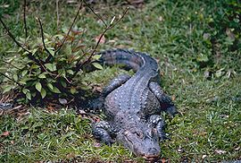

ლომი არის დიდი მტაცებელი ცხოველი, რომელიც ცხოვრობს აფრიკაში და მცირე რაოდენობით აზიას სამხრეთ ნაწილში.ლომი (ლათ. Panthera leo) — მტაცებელი ძუძუმწოვარი კატისებრთა ოჯახის, პანტერათა გვარის წარმომადგენელი. მისი სხეულის სიგრძე (ხვადისა) 180-240 სმ, მასა 180-227 კგ აღწევს. ძუ ტანად ხვადზე უფრო პატარაა. ლომს აქვს ძლიერი მოქნილი სხეული, მასიური თავი, გრძელი დინგი, შავი ფუნჯით დაბოლოებული გრძელი კუდი. მოზრდილ ხვადს ფაფარიც აქვს, დანარჩენი ბალანი მოკლეა და მოყვითალო. ბოკვერი ხალებიანია. ცნობილია ლომის 2 ქვესახეობა - აფრიკული და აზიური. ლომი გავრცელებულია ეკვატორულ აფრიკაში (დაცულია ნაკრძალებში) და ინდოეთში (გუჯარეთის შტატი). VIII-X საუკუნეებში ლომი კავკასიაშიც ბინადრობდა. ცხროვრობს სავანებში, ნახევრად უდაბნოებში, იშვიათად უდაბნოებში. იკვებება ხერხემლიანი ცხოველებით, ჭამს აგრეთვე ლეშს, ნადირობს შებინდებისას და ღამით. ადამიანს იშვიათად ესხმის თავს. ბუნაგს იკეთებს გამოქვაბულში, ნაპრალში, ორმოში. აქვს ძლიერი ხმა, რომელიც საკმაოდ შორს ისმის. მაკეობა 105-112 დღემდე გრძელდება. შობს 3-4 თვალახელილ (ზოგჯერ თვალაუხილავ) ბოკვერს, მათი სხეულის სიგრძე 30 სმ, ხოლო მასა 400 გ აღწევს. სქესობრივად მწიფდება მე-4 წელს. ცოცხლობს 30-35 წელს (იშვიათად მეტს). ადვილად იწვრთნება, ტყვეობაშიც (ზოოპარკი, ზოობაღი) მრავლდება.
ვეფხვი არის ერთი ყველაზე დიდი კატა და ცხოვრობს აზიის ტროპიკულ ტყეებში.ვეფხვი (ლათ. Panthera tigris) — მტაცებელი ძუძუმწოვარი კატისებრთა ოჯახის, პანტერათა გვარის წარმომადგენელი. ვეფხვი კატისებრთა ოჯახის ყველაზე დიდი წარმომადგენელია, სხეულის სიგრძე 1,4–2,8 მ, კუდის — 0,6–1,1 მ, წონა 100–300 კგ. წაგრძელებული სხეული მოხატული აქვს განივი ზოლებით. გავრცელებულია ჩრდილოეთ კორეაში, ჩინეთში, ინდოეთში, ინდოჩინეთში, მალაის არქიპელაგზე, ჩრდილოეთ ირანში, უსურისა და ამურის მხარეებში, თალიშში, ამუდარიის ხეობაში, იშვიათად თურქმენეთში. ვეფხვი ნადირობს მსხვილ ძუძუმწოვრებზე, იშვიათად ფრინველებზე, ქვეწარმავლებზე და სხვა. თავს ესხმის ადამიანსაც. ვეფხვი 2–3 წელიწადში ერთხელ შობს თვალაუხილავ, უსუსურ 2–4 ბოკვერს (მაკეობა 105 დღემდეა).2 წლის ასაკიდან უკვე საკმაო ძალა აქვს დამოუკიდებლად სანადიროდ, სქესობრივ სიმწიფეს აღქევს 4–5 წლისა, ცოცხლობს საშუალოდ 8–10 წელს. აქვს 6–7 მ სიგრძის ნახტომი.[2] ქართულ ზეპირსიტყვიერებაში და ძვ. მწერლობაში სიტყვა „ვეფხვი“ აღნიშნავდა ჯიქს (ლეოპარდს ანუ პანთერას — Panthera pardus), დღევანდელი გაგებით კი მხოლოდ XX საუკუნეში დამკვიდრდა.[2] ვეფხვი საქართველოში საქართველოში ვეფხვი არ ბინადრობს. პირველად იგი XVIII საუკუნის დამლევს სოფელ ახმეტის მახლობლად მოკლეს. ეს ფაქტი აღნიშნული აქვს დავით მესხიშვილს. მონადირეებს იგი მეფე ერეკლესთვის მიურთმევიათ.[3] მეორედ 1922 წლის 4 დეკემბერს თბილისის მახლობლად, სოფელ ლელობთან მოკლეს. საქართველოში იგი აზერბაიჯანიდან მოხვდა. ვარაუდობენ, რომ ასეთი დიდი მანძილი ძუ ვეფხვის ძებნაში გაიარა. აზერბაიჯანიდან გარდაბნის ტყეში უნდა მოხვედრილიყო, შემდეგ — მანგლისში, მოგვიანებით ვეფხვმა მტკვრის მიდამოები დატოვა და მდინარე ხრამს ან ალგეთს მაღლა აუყვა. ამგვარად აღმოჩნდა თბილისიდან 23 კილომეტრით დაშორებულ სოფელ ლელობთან, სადაც გლეხების საქონელს ესხმოდა თავს[3]. ოთხმა ადგილობრივმა მონადირემ: გიორგი წითურიშვილმა, ალექსი წიკლაურმა, იოსებ წიკლაურმა და სიმონ ბექაურმა დიდი ძებნის შემდეგ მის ბუნაგს მიაკვლია და მოკლეს. მოკლული ვეფხვის ეგზემპლიარის დათვალიერებისას, მისი ტყავის ფერით, ნახატითა და აგრეთვე მესამე ღრძილის ე. წ. სიმხეცის კბილის არსებობით დადგინდა რომ ის ეკუთვნოდა კასპიურ ვეფხვს (Septeutrioriales). ეგზემპლიარი გადაეცა საქართველოს მუზეუმის ტაქსიმედრიულ ლაბორატორიას ფიტულის გასაკეთებლად[4].
ბულბული არის პატარა ჩიტი, რომელიც ცნობილი თავისი მშვენიერი გალობითაა.ბულბული, იადონი (ლათ. Luscinia) — ფრინველების გვარი ბეღურასნაირთა რიგისა. საქართველოშო გვხვდება 2 სახეობა; ჩვეულებრივი ბულბულის სხეული 160-190 მმ სიგრძისაა, იწონის 25 გრამამდე. გავრცელებულია აღმოსავლეთ ევროპაში და დასავლეთ ციმბირში. საქართველოში მხოლოდ მიმოფრენისას (აპრილ-მაისსა და აგვისტოში) გვხვდება. სამხრეთული ბულბული მობუდარი გადამფრენი ფრინველია. გავრცელებულია დასავლეთ და სამხრეთ ევროპაში, ჩრდილო-აღმოსავლეთ აფრიკაში და წინა და შუა აზიაში. საქართველოშია აპრილიდან სექტემბრამდე. ბინადრობს ბუჩქნარში, წყაროების , მდინარეების ნაპირებზე, ტყისპირებში, მთის ფერდობებზე და ბაღებში; უყვარს წყლის სიახლოვე. მაისის ბოლოს დებს 4-5 კვერცხს, კრუხობა 2 კვირამდე გრძელდება. იკვებება მწერებით, იშვიათად კენკრით . ბულბული საუკეთესო მგალობელი ფრინველია.
აღწერა მათი სხეულის სიგრძეა 21–30 სმ, მასა 150 გრამამდე. თავი პატარაა, ნისკარტი შედარებით გრძელი, მაღალი. ბოლო (კუდი) ჩვეულებრივ სწორად ჩაჭრილი ან მომრგვალებულია. ახალგაზრდა ფრინველის სამოსი ჭრელია; ზრდასრული ინდივიდების შეფერილობა — ერთფეროვანი (შავი, ყავისფერი, რუხი) ან დანაწევრებული (შავი, თეთრი, მურა, მოცისფრო-რუხი, წითური ან წაბლისფერი კონტრასტული არეებისა და ლაქებისაგან); მამლები ხშირად დედლებზე უფრო კაშკაშა ფერებში არიან გაფორმებული. ყველაზე მეტად ცვალებადი შეფერილობა მთის ანუ კუნძულის შაშვს (T. poliocephalus) აქვს, რომელსაც 50-მდე ქვესახეობა გააჩნია. შაშვის გვარის რიგ სახეობებს კაშკაშად აქვს შეფერილი ნისკარტი, ფეხები და კანის რგოლი თვალის გარშემო. გავრცელება ცნობილია დაახლოებით 65–80 სახეობა.[1] გავრცელებული არიან როგორც ძველ, ისე ახალ სამყაროში ; 2 სახეობა შეყვანილია ავსტრალიასა და ახალ ზელანდიაზე. უპირატესად ტყის ფრინველები არიან, თუმცა რამდენიმე სახეობა ღია ლანდშაფტებშიც ბინადრობს. ჩრდილოეთში მცხოვრებ სახეობებს სეზონურ ი გადაფრენები ახასიათებთ; მათი ნაწილი დიდ გუნდებს ქმნის. რიგ ქვეყნებში, ძირითადად კი სამხრეთ ევროპაში, შაშვები სანადირო ფრინველებს მიეკუთვნებიან. ქცევა და კვება ცქვიტი და მყვირალა ფრინველებია; ხშირად მიწაზე იკვებებიან. საკვებად იყენებენ მწერებს, ობობებს, ჭიაყელებს და მოლუსკებს, აგრეთვე ნაყოფებს (ძირითადად კენკრას). ზოგჯერ ზიანი მოაქვთ ხილისა და კენკროვანი კულტურების პლანტაციებისათვის. გამრავლება მონოგამიური ფრინველებია. ბუდობენ ცალკეულ წყვილებად ან პატარა კოლონიებად ხეებზე, ბუჩქებსა და მიწაზე. ბუდე მასიური და ჯამისებურია. მისი მშენებლობის დროს მასალებს ჩვეულებრივ თიხით ან მიწით ამაგრებენ. სეზონზე 1–2 (იშვიათად 3) ბუდეს აკეთებენ და თითოეულში 4–7 კვერცხს დებენ.
გველგესლა არის ქვეწარმავალი, რომელსაც შეუძლია დასწვდოს და მოიხმაროს თავისი მსხვერპლიკავკასიური გველგესლა (ლათ. Vipera kaznakovi) — შხამიანი გველი გველგესლასებრთა ოჯახისა. ბინადრობს მხოლოდ კავკასიაში, რუსეთსა და თურქეთში. საქართველოში გვხვდება აფხაზეთში, გურიაში, იმერეთსა და აჭარაში. სხეულის ზედა ნაწილი წითელი და ყვითელი ფერისაა, ხერხემალს კი გასდევს შავი ან მუქი რუხი განიერი ზოლი, რომელიც ზოგჯერ ზიგზაგის ფორმისაა. სახეობას ახასიათებს მელანიზმი, მაგრამ პირთან რჩება წითელი ან ყვითელი შეფერილობა. წიწილები მოწითალო-ყავისფრები არიან.[1] დამახასიათებელია მალული ცხოვრების ნირი. წყვილდება მაისსა და ივნისში. ცოცხლადმშობია. შემოდგომაზე ბადებს 5–10 წიწილს.[2] იკვებება მღრღნელებით, ხვლიკებით, წვრილი ფრინველებით, ახალგაზრდა გველები — მწერებით, კერძოდ, კალიებითა და ჭრიჭინებით.[1] შეტანილია საქართველოს „წითელ ნუსხაში“.[3].
ნიანგი არის დიდი ქვეწარმავალი, რომელიც ცხოვრობს წყალში.ნიანგები (ლათ. Crocodilia) — ქვეწარმავალთა რიგი. მათი სიგრძე 2-5 მ, იშვიათად (ნილოსის ნიანგები, ქედიანი ნიანგები) 7 მეტრს აღწევს. აქვთ გრძელი, გვერდებიდან შებრტყელებული კუდი, წაგრძელებული დინგი, მოკლე ფეხები, უკანა კიდურების თითებს შორის დაჭიმულია საცურაო აპკი. ნესტოები და თვალები (ვერტიკალური გუგით) ზემოთაა აწეული, რაც მათ საშუალებას აძლევს წყლიდან მხოლოდ თვალები და ნესტოები ამოყონ. ნესტოები და ყურის ხვრელები დაცულია სარქვლებით. სხეული, კუდი და კიდურები დაფარულია სწორკუთხოვანი რქოვანი ფარებით. ცხვირ-ხახა გამოყოფილია პირის ღრუსაგან მეორეული ძვლოვანი სასით. „მუცლის ნეკნები“ აქვთ, ლავიწი — არა. თავის ტვინი საკმაოდ განვითარებულია. გამოირჩევიან კარგი სმენით და მხედველობით. გულის პარკუჭები მთლიანად გადატიხრულია, მაგრამ აორტის რკალები ერთმანეთთან ხვრელითაა დაკავშირებული, რის გამოც არტერიული და ვენური სისხლი ერთმანეთს ერევა. საშარდე ბუშტ ი არა აქვთ. ფილტვები კარგადაა განვითარებული. ენა უძრავია. კონუსური კბილები ფოსოებშია ჩამჯდარი. ნიანგები გავრცელებულია ტროპიკულ სარტყელში. შეუძლიათ ერთი წყალსატევიდან მეორეში დიდ მანძილზე გადასვლა. აქტიურები არიან ღამით. იკვებებიან უმთავრესად თევზებით, წყლის სხვა ცხოველებით, ტანად დიდი ნიანგები თავს ესხმიან დიდ ცხოველებს (რქოსან პირუტყვსაც კი) და ადამიანს (განსაკუთრებით საშიშია ქედიანი ნიანგები). დედალი ნიანგები ქვიშაში (უმთავრესად მეჩეჩზე ) დებს 20-100 მკვრივნაჭუჭიან კვერცხს, ცოცხლობენ 80-100 წელს. ნიანგების ხორცს საკვებად იყენებენ, ტყავს — სხვადასხვა საგალანტერეო ნაკეთობის დასამზადებლად. ამჟამად ნიანგები საგრძნობლად განადგურებულია. არსებობს თანამედროვე ნიანგების 21 სახეობა, რომელიც გაერთიანებულია 3 ოჯახში: გავიალები, ნამდვილი ნიანგები და ალიგატორები.
ტოგა არის პატარა ამფიბია, რომელიც ცნობილია თავისი ნათელი ფერებით და ხშირად ცხოვრობს ტენიან გარემოში.თევზები — წყლის ხერხემლიანი ცხოველები, რომლებსაც არ აქვთ სხეულის მუდმივი ტემპერატურა. თევზების ზომა-წონა განსხვავებულია: პანდაკის სიგრძე 7,5 მმ-ს აღწევს, ხოლო ვეშაპისებრი ზვიგენისა 15-20 მ-ს. თევზების უმრავლესობას თითისტარისებრი სხეული აქვს, ზოგს — გვერდებიდან (კამბალა) ან ზურგ-მუცლისაკენ (სკაროსი) გაბრტყელებული, გველივით (გველთევზა) წაგრძელებული ან ნემსივით (ზღვის ნემსთევზა) წაწვრილებული, ზოგი ბურთისებრი (ზღარბთევზა) ან თასმისებრია (ქაშაყთმეფე). თევზების სხეული სიმეტრიულია, გარდა კამბალასი, რომელსაც ორივე თვალი ცალ მხარეს აქვს. სხეული დაფარულია ქერცლით. ზღარბთევზას სხეული შემოსილია გრძელი ქიცვებით, ზუთხისნაირთა სხეულზე 5 მწკრივადაა განლაგებული ძვლოვანი ბალთები. ლოქოსა და სხვათა სხეული ტიტველია. თევზების კანი დიდი რაოდენობით შეიცავს ლორწოს გამომყოფ ერთუჯრედიან ჯირკვლებს. ღრმა ზღვის თევზების უმრავლესობას მანათობელი ორგანოები აქვს. თევზების შეფერილობა კანის ნაირგვარ პიგმენტებზეა დამოკიდებული. ჩვეულებრივ, მათი ზურგის მხარე უფრო მუქია, ვიდრე მუცლისა. თევზების კუნთოვანი სისტემა საკმაოდ დიფერენცირებულია და მასთან დაკავშირებულია ზოგი თევზის ელექტრული ორგანოები, ხოლო უმრავლესობის — ძვლოვანი. ზვიგენების უმეტესებას და ზუთხისებრ თევზებს დაუნაწევრებელი ქორდა აქვთ. თევზების ჯგუფი დიდი მრავალფეროვნებით გამოირჩევა. მსოფლიოში თევზების დაახლოებით 34 300 სახეობაა აღწერილი, თუმცა ყოველწლიურად კვლავ ხდება 250-მდე ახალი სახეობის აღმოჩენა. მიუხედავად იმისა, რომ მსოფლიო ოკეანეებში წყლის მოცულობა 10 000-ჯერ აღემატება მსოფლიოს მტკნარ წყლებს, მასში თევზების სახეობათა 58% ბინადრობს, მტკნარ წყლებში თევზთა სახეობების 41%-ია, ხოლო 1% ანადრომულ ცხოვრების წესს ეწევა, რაც ოკეანის მარილიანი წლებიდან მტკნარი წყლებისკენ, ან პირიქით მუდმივ მიგრაციას გულისხმობს. საქართველოს მტკნარ წყლებში გავრცელებულია თევზების 80-ზე მეტი სახეობა, რომელთა შორის ბევრი ენდემურია. მაგალითად, მტკვრის აუზში გავრცელებული 12 სახეობის თევზიდან, 9 მტკვრისა და მისი შენაკადების ენდემს წარმოადგენს. მათ შორის აღსანიშნავია მტკვრის წვერა (Barbus lacerta), მურწა (Barbus mursa), ჭანარი (Barbus capito) და სხვ. შავი ზღვის აუზის თევზებიდან 6 სახეობა ენდემურია; გარდა ამისა, აქ გავრცელებულია ზუთხისებრთა ოჯახის 5 სახეობა, რომელთა შორისაა გაქრობის პირას მყოფი ატლანტური ზუთხი (Acipenser sturio). გარდა ადგილობრივი სახეობებისა, საქართველოში გვხვდება 9 ინტროდუცირებული სახეობა, მათ შორის ყველაზე ფართოდ გავრცელებულია კარჩხანა (Carasius carasius).